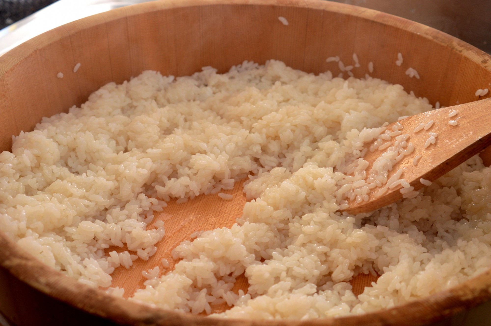
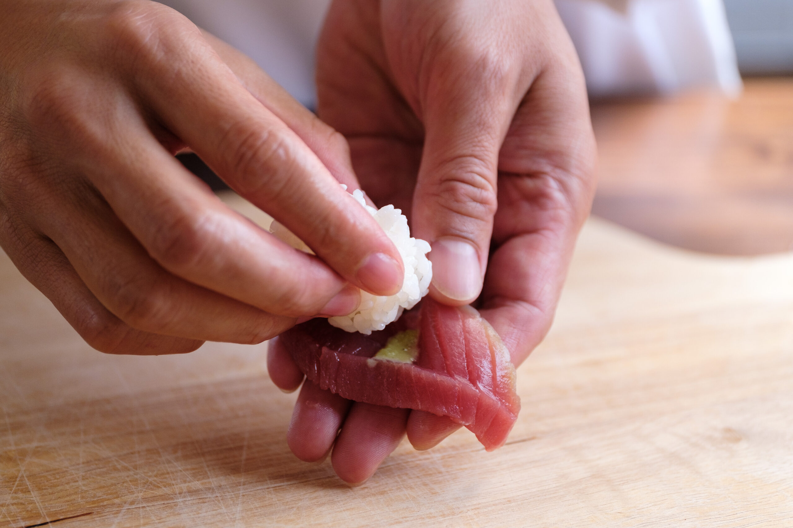
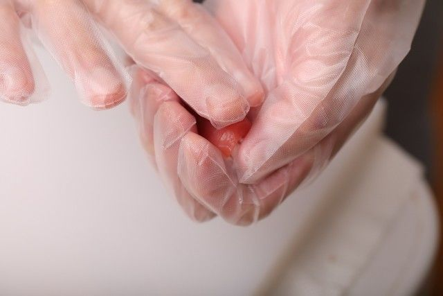

You add the ingreadients to make it throw it to pot and boid.
Also, you have to do the same thing to make pickled soy sauce.
second, you have to add and mix the ingreadients.
However, you must add salt at two times.
After mixing water and salt, you have to throw topping of sushi
into the salty water. And, you have to drop topping of sushi in the water on Kitchen paper.
Also, you put it into the Pickled soy sauce.
If you put it at one minute, you can take it and put like
Kitchen paper
to cut the wasted soy source.
You put Steamed white rice in the something buttom that is flat,
add the Mixed vinegar and cut the rice to enter the air to it.

You have to cut its a piece 2 or 3mm as bark is bottom.
You don't need any power of cuting.It is important to reduce the power of arms.

You take rice of almost 10g and you make figure of sushi's rice.
You should hold them very softly you put rice on the Syari(fish)
like this

because we take the air between the rice.
Also,you have to push the rice of center little .
After reversing and fixing the figure of it,you have to hold again
and push it the another hand

The end of this, you put the Boiled soy sauce around it using brush.
So, yo finished making!!!!